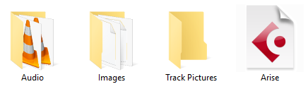
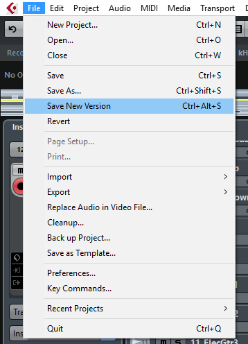

Understanding the way Cubase stores your data will make it easy to keep your project tidy and intact. When we create a new project it will automatically generate a set of files and folders at the location we have chosen.
Inside our project folder we can see that a number of items have been created.

The Audio files of our project are stored in the Audio folder and it is crucial that whenever moving your project from one location to another that this folder is moved as well. The file with the Cubase logo on (in this case "Arise.cpr") is the actual project file. This is what stores all of our plugins and settings as well as the regions of audio and midi within our project.
When backing up our project it is important to ensure that all of these files are copied and not just the project file. Cubase will not be able to find the audio files if the audio folder is not where it expects it to be. Make sure that the file structure is intact.
We can save our project in the same way that we save any other type of file. From the File menu we choose Save As in the first instance then Save after that. If we need to create a new version of the project we can simply press the Save New Version option.
